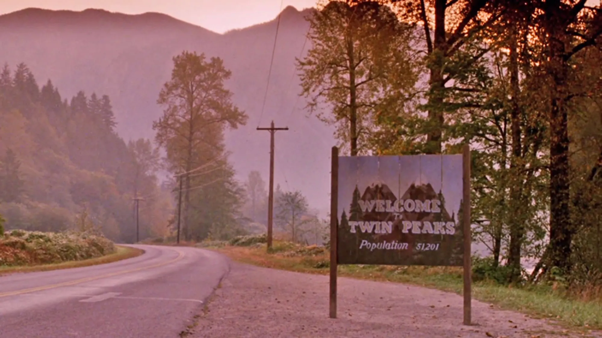

La Serie
Twin Peaks
Una historia de Lynch y Frost que no deja de retornar.
Producción y creadores
Twin Peaks fue creada por David Lynch y Mark Frost a partir de una idea que Frost llevaba desarrollando años atrás. La serie original se emitió en ABC entre 1990 y 1991, totalizando 30 episodios en dos temporadas.
La producción corrió a cargo de Lynch y Frost junto a productores como Duwayne Dunham, Mark Frost mismo dirigiendo varios episodios y Lynch dando forma a la apertura y dirigiendo capítulos clave (especialmente la primera mitad de la Temporada 2).
La serie fue grabada en la región de Snoqualmie y North Bend, Washington, que se convirtió en el corazón visual de Twin Peaks. Sus bosques de pinos, cataratas y pueblos pequeños fueron transformados en el set más reconocible de la televisión norteamericana de los años 90.
Influencias y estilo
Lynch tomó elementos de Sunset Boulevard (el misterio urbano), Mullholland Drive (Los Ángeles como personaje), y su propio trabajo previo en cine experimental. La serie mezcla géneros: policial clásico, melodrama televisivo, horror sobrenatural y surrealismo.
El resultado fue una serie que no cabía en ninguna categoría. No era solo policial (aunque lo parecía), ni solo drama (aunque tenía las estructura de uno). Lynch introdujo lo onírico en la televisión de manera que la industria no esperaba ni sabía cómo recibir.
La música de Angelo Badalamenti es inseparable del espíritu de la serie: sus cuerdas oscuras, sus pianos solitarios y su tema de apertura (con el silbido de pájaro) se convirtieron en una firma tan fuerte como la visual.
David Lynch: la mirada peculiar
David Lynch no es un director de televisión convencional. Sus referencias van desde el cine europeo (Bergman, Fellini) hasta Eraserhead, su cortometraje de culto de 1977. Su filosofía es simple y radical: la verdad está en los detalles.
En Twin Peaks, Lynch obsesionó a su equipo con texturas, con cómo se veía una cortina bajo la luz, con el sonido exacto de una puerta al cerrarse. Cada gesto tenía que contar algo; nada era accidental. Un personaje que come algo de una manera peculiar, o que mira fijamente un objeto sin razón aparente, podría estar revelando su carácter completo.
Lynch también es famoso por su rechazo a explicar. Cuando la audiencia quería respuestas claras sobre el misterio sobrenatural, Lynch respondía con más misterio. The Return, en 2017, llevó esta filosofía al extremo: episodios sin diálogos, escenas que duraban minutos enteros con solo sonido ambiente, y un final que dejaba todo abierto a la interpretación.
Su obra televisiva tuvo influencia profunda en series posteriores como The Sopranos, Breaking Bad, True Detective y todo el modelo de la "Prestige TV". Lynch demostró que la televisión podía ser arte, no solo entretenimiento.
Por qué se retoma en 2017
Durante 26 años, Twin Peaks fue una serie muerta. Había una película de Lynch en 1992 (Twin Peaks: Fire Walk with Me) que fue mal recibida, y luego silencio. Pero la cultura no dejó de volver a Twin Peaks: novelizaciones, cómics, un videojuego en 2002, y una comunidad de fans que nunca paró de especular sobre qué le había pasado a Cooper.
En 2016, Lynch anunció el retorno. La razón: la tecnología había evolucionado lo suficiente para que pudiera hacer exactamente lo que quería, sin compromisos. Showtime, una plataforma de cable, le dio total libertad creativa. No había publicidad que interrumpir (como en ABC), no había límites de duración, no había notas de ejecutivos sobre "hacerlo más comercial".
The Return fue Lynch sin filtro. Dirigió todos los 18 episodios. Algunos tienen 50 minutos, otros casi 90. Hay episodios que son casi películas experimentales. Una parte entera (Part 8) es casi completamente muda y trata exclusivamente sobre el origen del mal en la física nuclear de los años 40.
Esto es importante porque muestra que Lynch nunca dejó Twin Peaks. Simplemente estaba esperando el momento en que pudiera contar el resto de la historia sin compromisos.
Datos curiosos
Legacy: por qué sigue importando
Twin Peaks cambió la televisión. Antes de Twin Peaks, la TV era vista como entretenimiento menor, algo que veías en casa en horario prime time, y que seguía una estructura predecible. Cada episodio resolvía su propio misterio; los arcos se repetían.
Lynch dijo: "¿Y si no resolvemos el misterio? ¿Y si lo complicamos más?" Eso fue revolucionario. Abrió la puerta a series que podían ser ambiciosas narrativamente, que podían estirar un misterio a lo largo de toda una temporada, que podían jugar con géneros, con ritmo, con lo absurdo como herramienta dramática.
Hoy, en 2026, Twin Peaks sigue siendo enseñada en escuelas de cine como un punto de inflexión. No porque haya "envejecido bien" — a veces la imagen se ve dated, la música a veces suena de los 90 — sino porque la intención artística nunca se desmorona. Lynch sabía exactamente lo que estaba haciendo, y eso se siente en cada fotograma.
Twin Peaks es una serie sobre lo que está debajo. Debajo de un pueblo bonito, debajo de una familia respetable, debajo de un sueño. Lynch nunca dijo qué era lo que estaba debajo — ese era el punto. La respuesta está en cada espectador que veía la serie.